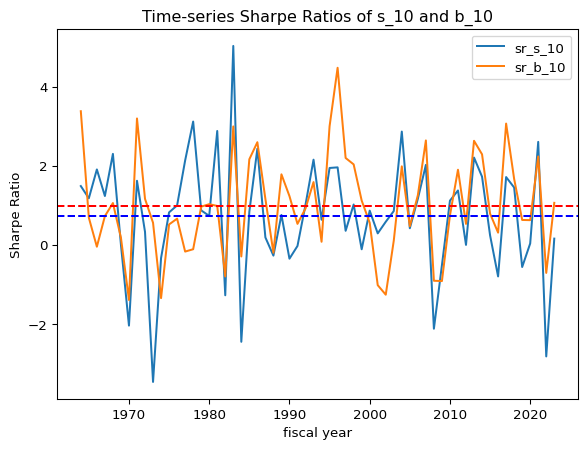
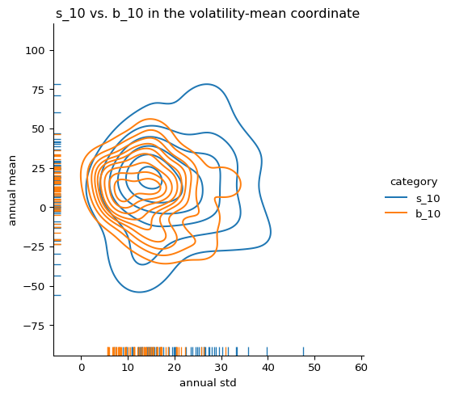
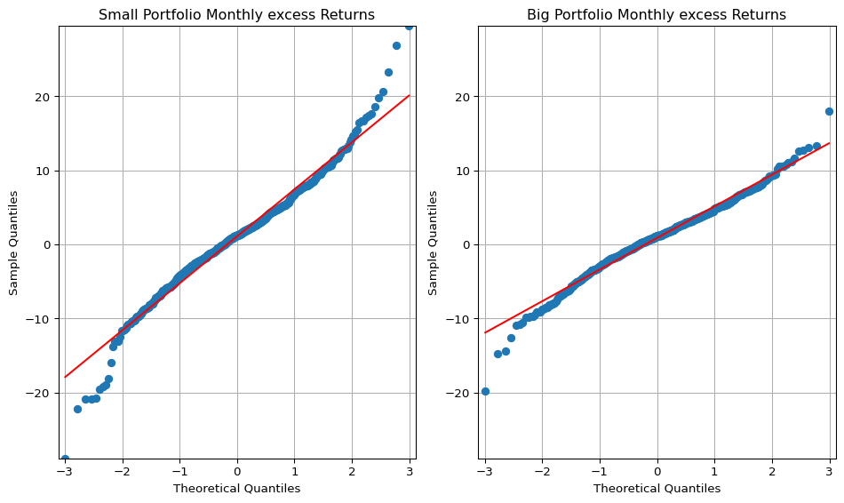
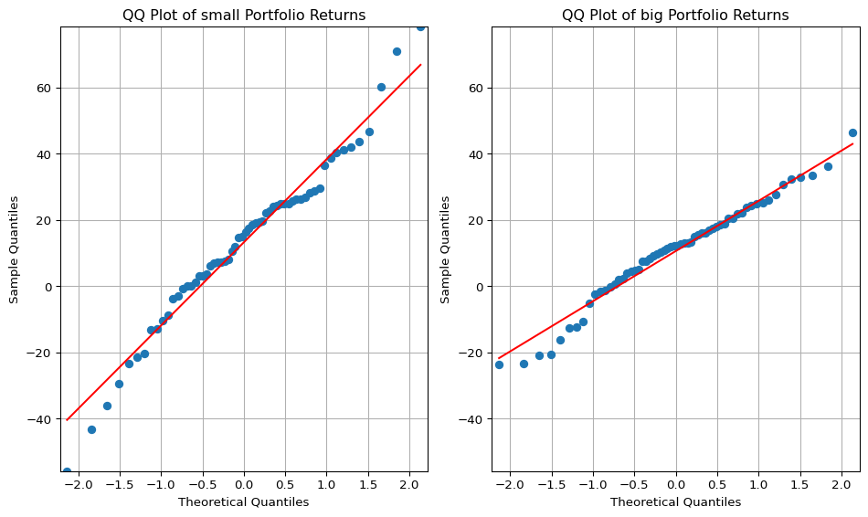

# Import Librariesimport pandas as pdimport numpy as npimport statsmodels.api as sm # QQ plotfrom scipy import stats # relative t-test# graphicsimport matplotlib.pyplot as pltimport seaborn as sns# Data Frame. Data frequency: Monthlystart_date ="1963-07-01"end_date ="2023-06-30"print("start date:", start_date)print("end date:", end_date)
start date: 1963-07-01
end date: 2023-06-30
Code
#@title Data: Portfolios_Formed_on_ME# https://mba.tuck.dartmouth.edu/pages/faculty/ken.french/Data_Library/import pandas_datareader as pdrimport warningswarnings.simplefilter(action='ignore', category=FutureWarning) # FutureWarning 제거# 'Portfolios_Formed_on_ME', by a Univariate sort on Size (market equity, ME)# 3 Potfolios include all NYSE, AMEX, and NASDAQ stocks, but with NYSE breakpoints to divide# Size are the bottom 30%, middle 40%, top 30%; quintiles; deciles.pfo_size_raw = pdr.DataReader( name="Portfolios_Formed_on_ME", data_source="famafrench", start=start_date, end=end_date)[0]pfo_size = (pfo_size_raw .reset_index(names="date") .assign(date=lambda x: pd.to_datetime(x["date"].astype(str))) .set_index('date') # Set the 'date' column as the index .rename(columns=lambda x: x.lower()) .rename(columns={'lo 30': 's_30', 'hi 30': 'b_30', 'lo 20': 's_20', 'hi 20': 'b_20', 'lo 10': 's_10', 'hi 10': 'b_10'}) .drop(['<= 0'], axis="columns"))# Calculate the average of the small group# pfo_size.iloc[:, 8:17].columns.tolist()pfo_size['s_70'] = pfo_size.iloc[:, 0:2].mean(axis=1)pfo_size['s_80'] = pfo_size.iloc[:, 3:7].mean(axis=1)pfo_size['s_90'] = pfo_size.iloc[:, 8:17].mean(axis=1)# Drop columnspfo_size = pfo_size.drop(pfo_size.columns[9:17], axis=1)pfo_size = pfo_size.drop(pfo_size.columns[4:7], axis=1)pfo_size = pfo_size.drop(pfo_size.columns[1:2], axis=1)# Describepfo_size.describe().round(2)
s_30
b_30
s_20
b_20
s_10
b_10
s_70
s_80
s_90
count
720.00
720.00
720.00
720.00
720.00
720.00
720.00
720.00
720.00
mean
1.12
0.91
1.10
0.90
1.10
0.88
1.10
1.09
1.08
std
6.20
4.33
6.34
4.29
6.35
4.27
5.72
5.58
5.46
min
-29.43
-20.80
-29.65
-20.32
-28.87
-19.74
-28.30
-27.82
-27.26
25%
-2.37
-1.57
-2.41
-1.56
-2.25
-1.53
-2.18
-1.96
-1.92
50%
1.38
1.22
1.36
1.17
1.25
1.12
1.38
1.41
1.34
75%
4.70
3.64
4.89
3.54
4.67
3.47
4.57
4.61
4.60
max
26.91
17.75
27.54
18.05
29.50
18.06
24.84
23.83
23.08
Summary Statistics for Fama-French Size-Decile Portfolios: Monthly value-weighted excess returns for size-sorted portfolios from July 1963 to June 2023. Excess returns are defined as raw portfolio returns net of the one-month Treasury bill rate.
To establish a structural benchmark for the TBTF strategy, we begin by examining the historical performance of size-sorted portfolios constructed by Fama and French. In particular, we compare the top and bottom deciles of market capitalization—commonly denoted as b_10 (large-cap) and s_10 (small-cap)—using monthly return data spanning from July 1963 to June 2023.
The data originate from the “Portfolios Formed on Size (ME)” dataset provided by the Ken French Data Library. These portfolios, covering NYSE, Nasdaq, and AMEX stocks, are rebalanced annually using NYSE breakpoints and report monthly value-weighted excess returns—i.e., returns net of the one-month Treasury bill rate (risk-free return).
For additional robustness, we construct aggregates (e.g., s_70, s_90) to represent broader small-cap behavior.
Motivation
This section evaluates whether large-cap portfolios exhibit systematically superior risk-adjusted performance relative to small-cap portfolios. Such a result would support the hypothesis that TBTF-style strategies derive their advantage not from tactical optimization, but from structural features of the cross-sectional return distribution.
Methodology
We compare the s_10 and b_10 portfolios in three dimensions:
Distributional Shape: via QQ-plots and skewness asymmetry
Volatility Profile: through standard deviation comparisons
Sharpe Ratio Dynamics: using time-varying rolling Sharpe ratio curves and volatility–mean coordinate plots
Unlike most academic studies that summarize portfolio performance using static points in mean–volatility space, we propose a dynamic framework in which Sharpe ratios are evaluated as time-series objects. This allows us to capture persistent structural asymmetries.
Key Findings
The b_10 portfolio exhibits consistently lower volatility than s_10, across the full 60-year period.
Dynamic Sharpe ratio visualization reveals that the performance advantage of b_10 is persistent over time, not a byproduct of a particular decade or business cycle.
QQ-plots show that b_10 excess returns are closer to Gaussian, while s_10 returns display tail asymmetry—characterized by positive skewness and negative tail risk.
These results suggest that large-cap portfolios, especially those at the very top of the capitalization spectrum, provide more stable and efficient excess return profiles. This supports the structural validity of selecting top-ranked assets by market capitalization in TBTF portfolio construction.
Sharpe Ratio Dynamics
While static comparisons of mean and volatility offer useful summary insights, they can be misleading in the presence of temporal instability. To capture the time-varying performance profile of small- and large-cap portfolios, we construct rolling Sharpe ratios using annualized excess returns.
Let \(\mu_t\) and \(\sigma_t\) denote the rolling annualized excess return mean and volatility of a portfolio over a 36-month window. Then, the rolling Sharpe ratio at time \(t\) is computed as:
\[
\text{Sharpe}_t = \frac{\mu_t}{\sigma_t}
\]
We focus on the bottom and top size deciles: s_10 (small-cap) and b_10 (large-cap).
Key Results
Over the 60-year period, the unconditional average annual Sharpe ratio of b_10 was 0.99, compared to 0.74 for s_10.
The time-series of rolling Sharpe ratios reveals that b_10dominates structurally, not just in isolated windows.
During periods of macroeconomic stress, s_10 portfolios experience sharper volatility spikes, reducing their Sharpe ratios significantly.
Code
#@title Time-series of s_10 vs. b_10# # # # # moving average# pfo_size_rolling = pfo_size.rolling(window=12).mean()#@title without any overlap between the fiscal years# Resample to annual frequency and calculate annual standard deviation# groups the monthly data into yearly buckets.# annual_std = pfo_size.resample('Y').std() * np.sqrt(12)# Create a fiscal year columnpfo_size['fiscal_year'] = pfo_size.index.yearpfo_size.loc[pfo_size.index.month >=7, 'fiscal_year'] = pfo_size.loc[pfo_size.index.month >=7, 'fiscal_year'] +1# Group by fiscal year and calculate annualannual_mean = pfo_size.groupby('fiscal_year').mean()*12annual_std = pfo_size.groupby('fiscal_year').std() * np.sqrt(12)# annual_std.dropna(inplace=True)# annual_mean and annual_std have the same indexdf = pd.DataFrame(index=annual_mean.index)df['sr_s_10'] = annual_mean['s_10'] / annual_std['s_10']df['sr_b_10'] = annual_mean['b_10'] / annual_std['b_10']df['sr_s_10'].plot()df['sr_b_10'].plot()plt.axhline(y= df['sr_s_10'].mean(), color='b', linestyle='dashed')plt.axhline(y= df['sr_b_10'].mean(), color='r', linestyle='dashed')plt.legend()plt.xlabel('fiscal year')plt.ylabel('Sharpe Ratio')plt.title('Time-series Sharpe Ratios of s_10 and b_10')plt.show()print('The unconditional mean Annual Sharpe ratio of s_10 is '+str(df['sr_s_10'].mean().round(2)))print('The unconditional mean annual Sharpe ratio of b_10 is '+str(df['sr_b_10'].mean().round(2)))

The unconditional mean Annual Sharpe ratio of s_10 is 0.74
The unconditional mean annual Sharpe ratio of b_10 is 0.99
Annual excess return difference: s_10 – b_10. The red horizontal line marks the long-run average (~3.0% annually).
Time-series of 36-month rolling Sharpe ratios for s_10 and b_10. Dashed lines represent the unconditional average for each.
We also construct a bivariate distribution of annual mean and standard deviation using kernel density estimates:
Code
#@title s_10 vs. b_10 in the volatility-mean coordinate# Create a list of category namescategories = ['s_10', 'b_10']# Initialize an empty list to store dataframesdfs = []# Iterate through categories and create melted dataframesfor category in categories:# Create a temporary dataframe with selected columns and category label temp_mean = annual_mean[[category]].copy() # Keep the index temp_mean['category'] = category temp_mean.rename(columns={category: 'annual_mean'}, inplace=True) temp_std = annual_std[[category]].copy() # Keep the index temp_std['category'] = category temp_std.rename(columns={category: 'annual_std'}, inplace=True)# Merge the temporary dataframes for mean and std, keeping the index temp_df = pd.merge(temp_mean, temp_std, on=['fiscal_year', 'category'])# Append the temporary dataframe to the list dfs.append(temp_df)# Concatenate all the dataframes in the list into a single dataframe, keeping the indexdf = pd.concat(dfs, ignore_index=False)# Now create the displotsns.displot( data = df, # Use the reshaped DataFrame x="annual_std", y="annual_mean", hue="category", # Use the extracted category for hue kind="kde", rug=True,)plt.xlabel('annual std')plt.ylabel('annual mean')plt.title('s_10 vs. b_10 in the volatility-mean coordinate')plt.show()

Kernel density estimate of annual excess return vs. annual volatility for s_10 and b_10. The separation in volatility–mean space reflects the underlying Sharpe ratio asymmetry.
These dynamic plots provide a richer understanding of the persistent performance asymmetry between the smallest and largest decile portfolios—supporting the broader structural thesis underlying TBTF.
Contribution
Introduces a time-dynamic framework—Sharpe ratio level curves—to visualize and quantify structural performance asymmetries between size portfolios.
Establishes a long-term empirical benchmark against which TBTF performance can be evaluated.
Provides theoretical and empirical justification for focusing on top-market-cap stocks, beyond simple momentum or value signals.
Appendix
Figure A1: QQ Plot – s_10 vs. b_10
Code
#@title QQ-plot (정규분포 검사)# big = pfo_size['b_10']small = pfo_size['s_10']import statsmodels.api as smfig, (ax1, ax2) = plt.subplots(1, 2, figsize=(10, 6))# Calculate the minimum and maximum y-values across both datasetsmin_y =min(small.min(), big.min())max_y =max(small.max(), big.max())# QQ plot for 's_low' on the first subplot (ax1)sm.qqplot(small, line='s', ax=ax1)ax1.set_title('Small Portfolio Monthly excess Returns')ax1.grid(True)# QQ plot for 'b_low' on the second subplot (ax2)sm.qqplot(big, line='s', ax=ax2)ax2.set_title('Big Portfolio Monthly excess Returns')ax2.grid(True)# Set the y-axis limits for both subplots (ax1 and ax2)ax1.set_ylim([min_y, max_y])ax2.set_ylim([min_y, max_y])# Set x-axis limits of ax2 to be the same as ax1xlim = ax1.get_xlim()ax2.set_xlim(xlim)plt.tight_layout() # Adjust spacing between subplotsplt.show()

Code
#@title QQ-plot (annualized)big = annual_mean['b_10']small = annual_mean['s_10']fig, (ax1, ax2) = plt.subplots(1, 2, figsize=(10, 6))# Calculate the minimum and maximum y-values across both datasetsmin_y =min(small.min(), big.min())max_y =max(small.max(), big.max())# QQ plot for 's_low' on the first subplot (ax1)sm.qqplot(small, line='s', ax=ax1)ax1.set_title('QQ Plot of small Portfolio Returns')ax1.grid(True)# QQ plot for 'b_low' on the second subplot (ax2)sm.qqplot(big, line='s', ax=ax2)ax2.set_title('QQ Plot of big Portfolio Returns')ax2.grid(True)# Set the y-axis limits for both subplots (ax1 and ax2)ax1.set_ylim([min_y, max_y])ax2.set_ylim([min_y, max_y])# Set x-axis limits of ax2 to be the same as ax1xlim = ax1.get_xlim()ax2.set_xlim(xlim)plt.tight_layout() # Adjust spacing between subplotsplt.show()

QQ plots comparing sample quantiles of s_10 (left) and b_10 (right) returns to a standard normal distribution. The flatter slope and tighter fit of b_10 indicate lower volatility and greater normality, while s_10 exhibits positive skewness and negative tail risk.
QQ Plot Interpretation: Comparing Small vs. Big Size Portfolios
To evaluate the return distribution characteristics of small-cap and large-cap portfolios, we construct QQ plots of returns for the s_10 (smallest decile) and b_10 (largest decile) portfolios. The plots juxtapose sample quantiles against theoretical quantiles from a standard normal distribution. Three notable features emerge:
Slope of the Fitted Line (Volatility Indicator)
The slope of the QQ line is significantly flatter for the b_10 portfolio than for the s_10.
This reflects lower empirical standard deviation for large-cap returns, consistent with their lower volatility and more stable risk profiles. The slope in a QQ plot corresponds to the ratio of sample to theoretical standard deviation, reinforcing the volatility advantage of big stocks.
Line–Scatter Fit (Distributional Regularity)
The b_10 plot shows a much tighter fit of the scatter points along the reference line, compared to the s_10 portfolio.
This implies that large-cap returns conform more closely to the normal distribution. In contrast, the small-cap portfolio exhibits noticeable deviations, suggesting greater skewness, kurtosis, or latent regime switches. The result indicates that large-cap stocks exhibit greater distributional regularity, aligning with their more predictable behavior in large institutional portfolios.
Tail Behavior (Asymmetry in Small-Cap Returns)
For s_10, the right tail (positive returns) lies above the line, while the left tail (negative returns) lies below.
This pattern suggests positive skewness—i.e., occasional high positive returns but more frequent or severe downside shocks. Such asymmetry is common in small-cap stocks, which may have explosive upside potential but are also subject to default or delisting risk. The departure from symmetry in s_10 strengthens the case for mixture modeling and asymmetric tail analysis in the TBTF framework.
Table A1: Paired T-test (1963–2023)
Code
#@title Dependent t-test (annualized mean. Small sample)small = annual_mean['s_10']big = annual_mean['b_10']t_statistic, p_value = stats.ttest_rel(small, big)print("Paired t-test results:")print("t-statistic:", round(t_statistic,3))print("p-value:", round(p_value,3))# If the p-value is greater than your significance level (0.05),# you would fail to reject the null hypothesis (i.e. not enough evidence to suggest a significant difference)paired_diff = (small - big)paired_diff.hist(bins=len(annual_std) )plt.axvline(paired_diff.median(), color='red', linestyle='--')plt.title('Paired Mean Difference Histogram')plt.xlabel('Annual excess return Difference from small size to big size')plt.ylabel('Frequency')plt.show()print('The dashed line indicates the median of the difference')
The dashed line indicates the median of the difference
Code
#@title Dependent t-test (annualized std. Small sample)small = annual_std['s_10']big = annual_std['b_10']t_statistic, p_value = stats.ttest_rel(small, big)print("Paired t-test results:")print("t-statistic:", round(t_statistic,3))print("p-value:", round(p_value,3))# If the p-value is greater than your significance level (0.05),# you would fail to reject the null hypothesis (i.e. not enough evidence to suggest a significant difference)paired_diff = (small - big)paired_diff.hist(bins=len(annual_std) )plt.axvline(paired_diff.median(), color='red', linestyle='--')plt.title('Paired Volatility Difference Histogram')plt.xlabel('Annual Volatility Difference from small size to big size')plt.ylabel('Frequency')plt.show()print('The dashed line indicates the median of the difference')